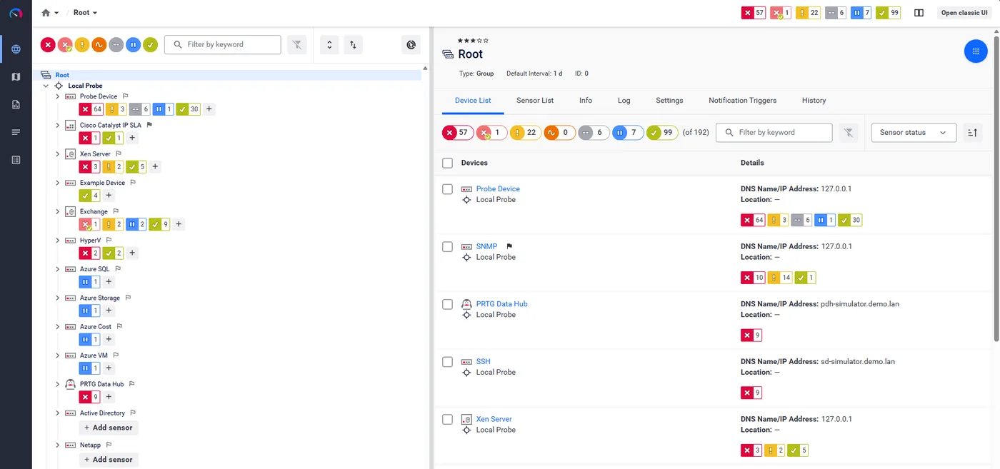

Wie gingen je voor?
Wat Re-Scan doet
Monitoring die
voor je werkt.
Een duidelijk dashboard. Meldingen die ertoe doen. En een omgeving die je team begrijpt.

Bouwen
Sensoren, dashboards en meldingen. Een solide PRTG-basis, ingericht op jouw IT-omgeving.
Onderhouden
Maatwerk in PowerShell of Python. Leesbare, aanpasbare scripts die met je omgeving meegroeien.
Controleren
Verstoringen inzichtelijk en meldingen op de juiste plek. Zodat je team gericht kan ingrijpen.
Helder aanbod
Dit is wat het kost.
Gerichte hulp, een gehoste omgeving of zelf aan de slag. Kies wat bij je past.
Consultancy
Expertise waar je die nodig hebt.
€125/uur
No cure / no pay
- Maatwerksensoren
- Installatie en configuratie
- Training voor je team
- Storingen oplossen
- Migraties naar PRTG
Hosting
Je monitoring, ondergebracht.
€300/maand
Maandelijks opzegbaar
- 500 sensoren
- Gehoste PRTG-omgeving
- Maandelijkse rapportages
- TV-dashboardadapter
- Plug & play
Training
Kennis die bij je team blijft.
€999/dag
Op locatie of op afstand
- Introductie in PRTG
- Een maatwerksensor maken
- Een dashboard opzetten
- Praktisch aan de slag
- Je team zelfredzaam
Meer inzicht. Minder sensoren.
PRTG te duur geworden?
Welke sensoren dragen écht bij? Een sensor-audit brengt het in kaart, met concreet advies om je licentiekosten te verlagen.
Uit de praktijk
Kennis om mee te werken.
Direct contact
Even over je
monitoring sparren?
Je spreekt met Thomas Faddegon.
Vertel waar je tegenaan loopt, dan kijken we samen verder.
RegioNoord-Brabant